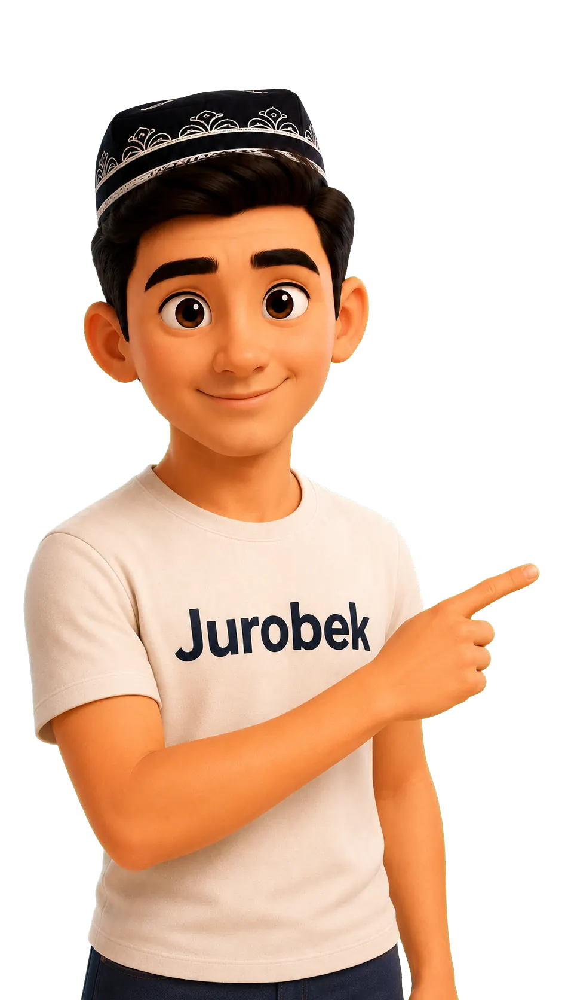

JURO / CHARACTER ASSET
Тот самый
Jurobek.
Фирменный персонаж в прозрачном слоёном 2D-формате. Сам моргает и мягко машет рукой — без выбора анимации.
Автоматическое приветствие

SVG + WebP + JavaScript · без сторонних библиотек
Моргание автоматическое, с нерегулярным интервалом. Анимация приостанавливается вне экрана и учитывает reduced motion. Референсные пиксели лица сохранены; дополнительные позы подготовлены по изображению.